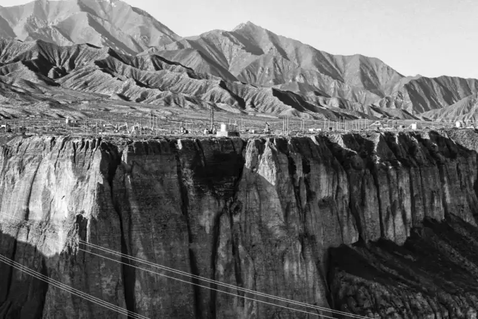
I Offer Oil to My Motherland
1. Yumen Oil Field. The Yumen Oil Field in Gansu Province lies in the heart of the Gobi, below the Qilian Mountains. It was the first oil field developed by New China. It is known as the cradle of China's oil industry. It sent more than a hundred thousand skilled workers to oil fields and refineries across the country. From 1949 to July 2022, it produced a total of 39.26 million tons of oil and gas.
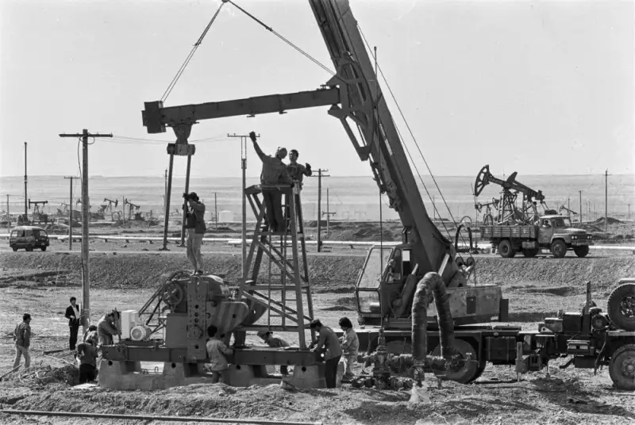
I Offer Oil to My Motherland
2. The Oil Campaign. In 1983, the Liaohe Oil Field in the Panjin area of Liaoning Province launched a large oil campaign to raise crude output. The campaign drove crude production up, and the field soon ranked among China's major oil fields.
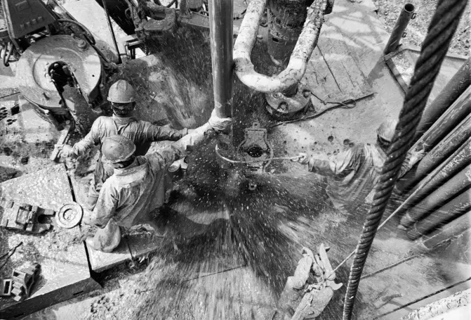
I Offer Oil to My Motherland
3. Carrying on the Iron Man Spirit. The Daqing Oil Field set a world record for production from a field of its kind. From 1976 it produced more than 50 million tons of crude a year, and it kept that high, stable output for 27 straight years. It then kept output above 40 million tons a year for another 12 years. This supplied energy for China's rapid economic growth during 40 years of reform and opening up. Today the Iron Man spirit, the Daqing spirit, and the spirit of offering oil to the motherland still live on among Daqing oil workers. This photo shows workers of the Daqing 1205 drilling crew working at the wellhead on August 26, 1997, amid flying mud.
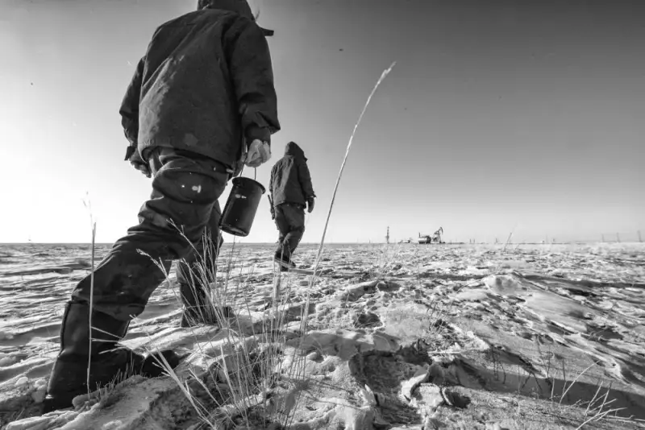
I Offer Oil to My Motherland
4. Oil Worker in Wind and Snow. In February 2010, at the Hailar Oil Field in the Inner Mongolia Autonomous Region, oil workers patrol the wells across a vast snowfield at minus 38 degrees Celsius.
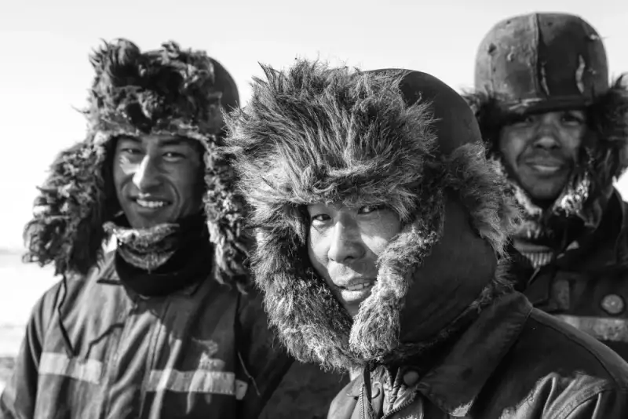
I Offer Oil to My Motherland
5. Oil-Field Workover Crew. Workover (maintenance on a producing well) is the dirtiest and hardest job in oil production. After a job, workers often leave covered in oil from head to foot. In February 2010, a young crew member in the Hailar area of the Daqing Oil Field faces his work with optimism.
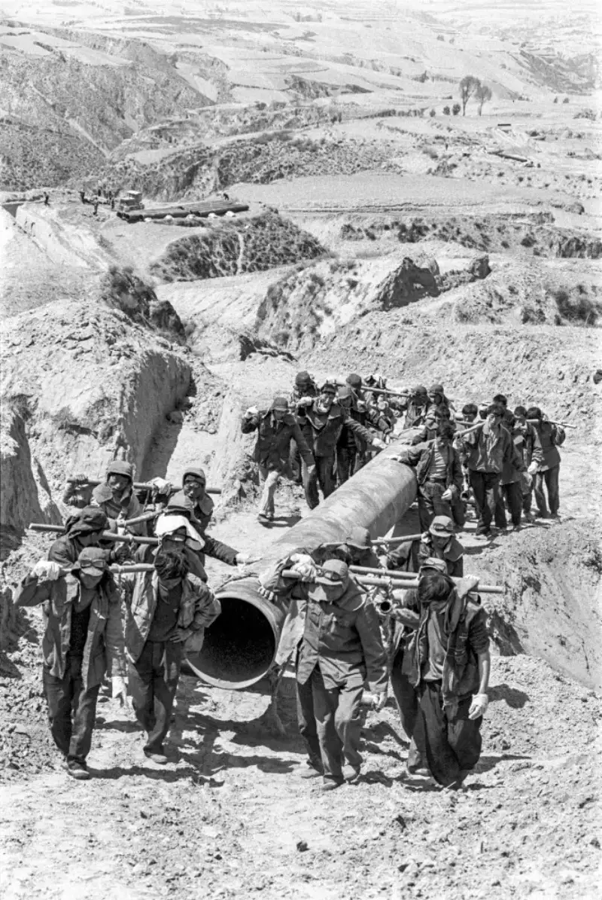
Building a Steel Pipe Network for the People: A Documentary of China's Long-Distance Oil and Gas Pipeline Construction. Part 1: To Make Beijing's Sky Blue. The gas pipeline from Jingbian in Shaanxi to Beijing began in 1992. Its goal was to improve Beijing's air and give citizens clean, high-energy natural gas. This photo shows a 32-person pipe-carrying team from the Sichuan Petroleum Construction Company hauling a 1.8-ton pipe up a hill on the Loess Plateau in Fugu County, Shaanxi.
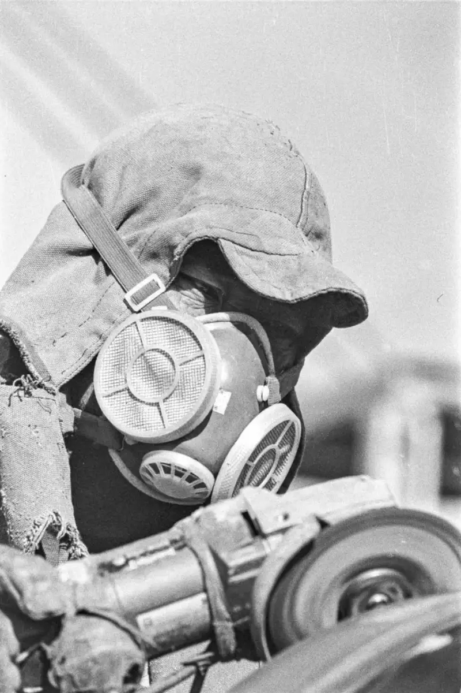
Building a Steel Pipe Network for the People: A Documentary of China's Long-Distance Oil and Gas Pipeline Construction. Part 2: Building the Pipeline with Precision. The Shaanxi-Beijing pipeline was China's first fully automated high-pressure gas pipeline. Its technical requirements were strict. Every weld was a key step in protecting quality. In 1997, a builder from the Sichuan Petroleum Construction Company grinds a weld to a fine finish.
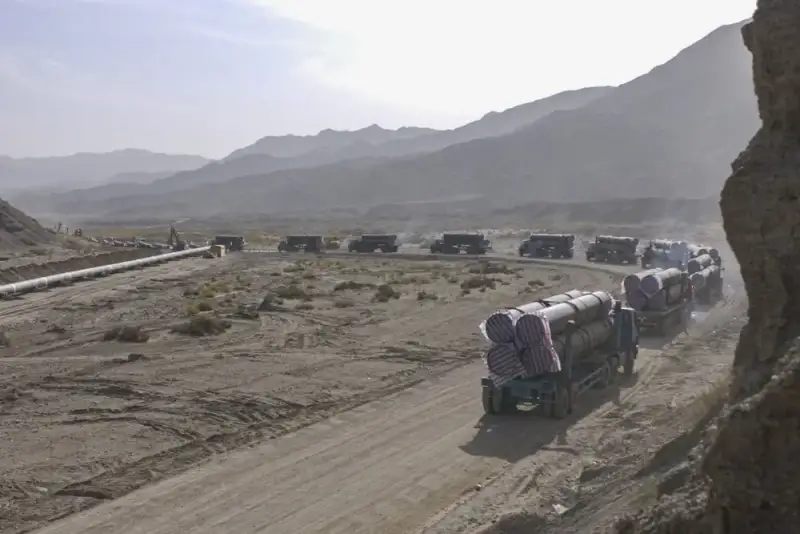
Building a Steel Pipe Network for the People: A Documentary of China's Long-Distance Oil and Gas Pipeline Construction. Part 3: Building the West-East Gas Transmission Artery. In 2001, the West-East Gas Transmission project became a key project of China's tenth five-year plan. The pipe runs from Luntai County in the Xinjiang Uyghur Autonomous Region in the west to Baihe Town in Shanghai in the east. It is 4,200 kilometers long. Since it opened, it has carried more than 700 billion cubic meters of gas to the developed east. It benefits more than 400 cities and 500 million people along the route.
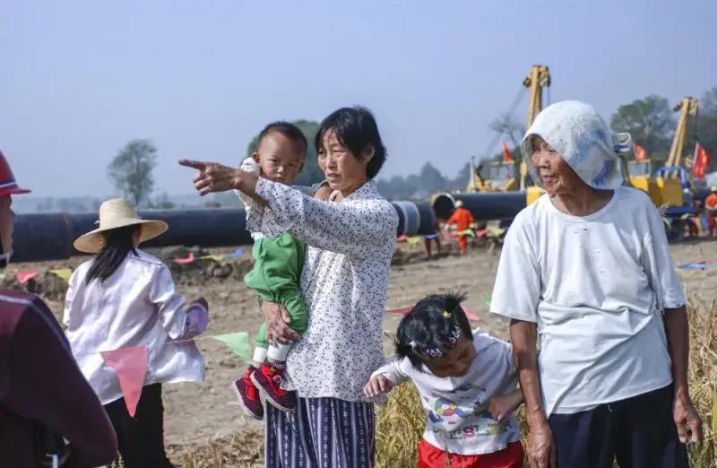
Building a Steel Pipe Network for the People: A Documentary of China's Long-Distance Oil and Gas Pipeline Construction. Part 4: The People Watch the West-East Gas Pipeline. On October 4, 2002, the key national project entered full construction. This gas artery, meant to improve China's energy mix, drew the attention of people along the route. When the pipe passed through Mengcheng County in Anhui Province, local residents came to the site to watch.
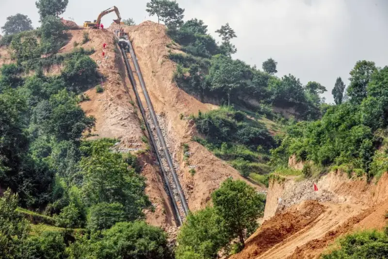
Building a Steel Pipe Network for the People: A Documentary of China's Long-Distance Oil and Gas Pipeline Construction. Part 5: Rushing the Lanzhou-Guiyang Pipeline. On July 17, 2011, the Lanzhou-to-Guiyang oil pipeline, built by the Third Company of the Petroleum Pipeline Bureau, crossed the Yanwangtai section in Kang County, Gansu Province. The slope reached 35 degrees.
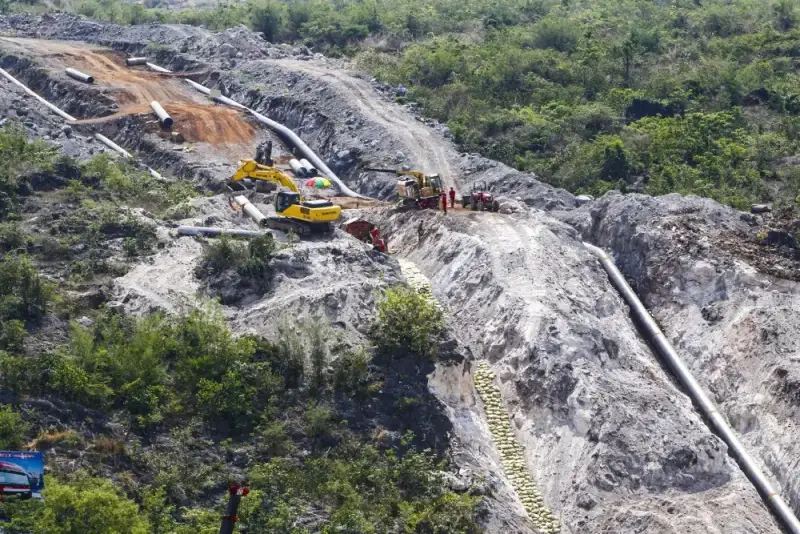
Building a Steel Pipe Network for the People: A Documentary of China's Long-Distance Oil and Gas Pipeline Construction. Part 6: Building the China-Myanmar Oil and Gas Pipeline. On May 1, 2011, construction began on the oil and gas pipeline between China and Myanmar. This cross-border pipe is more than 2,400 kilometers long and is a key route for China's energy imports. The difficult, dangerous sections inside Myanmar were built by the Chinese side. This photo shows Chinese workers toiling in fierce heat over rough terrain, to finish the pipe on time.
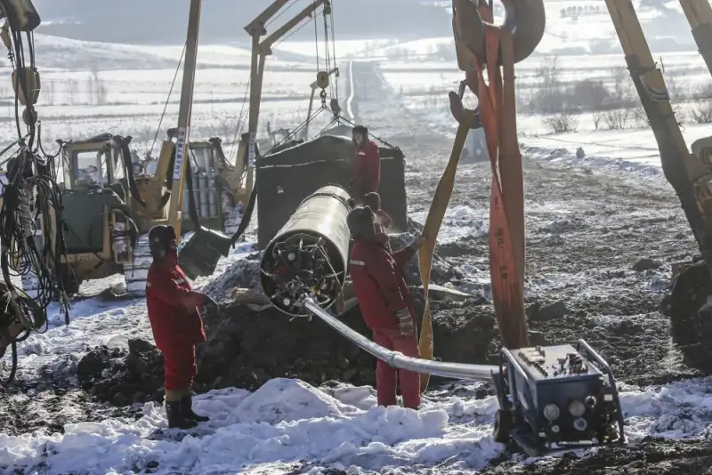
Building a Steel Pipe Network for the People: A Documentary of China's Long-Distance Oil and Gas Pipeline Construction. Part 7: Building the China-Russia Pipeline in Severe Cold. The oil and gas pipeline between China and Russia received close attention from the leaders of both countries. Work began in stages from September 2010. This photo shows builders of China Petroleum working on December 7, 2016, at a site in the Greater Khingan range of Heilongjiang Province, in minus 38 degree cold.
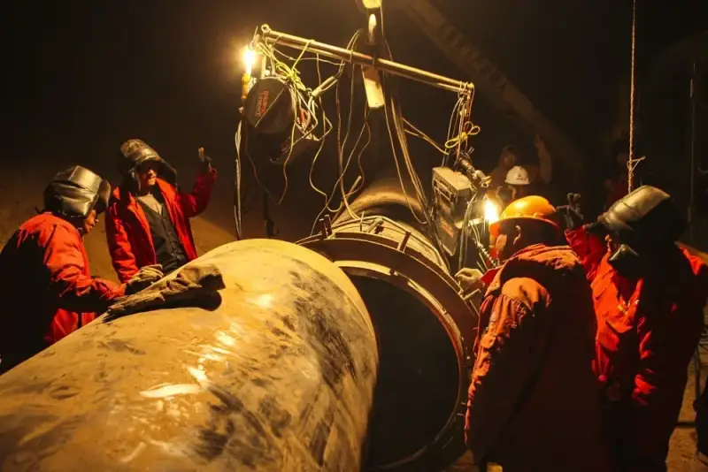
Building a Steel Pipe Network for the People: A Documentary of China's Long-Distance Oil and Gas Pipeline Construction. Part 8: The Third Gas Pipeline to Beijing. After the first Shaanxi-Beijing gas pipeline opened in September 1997, Beijing's gas use grew every year. To meet the capital's need for clean energy and improve its air, China Petroleum built three more large-diameter high-pressure gas pipelines to supply Beijing. This photo shows builders working day and night on the third Shaanxi-Beijing line in January 2011.
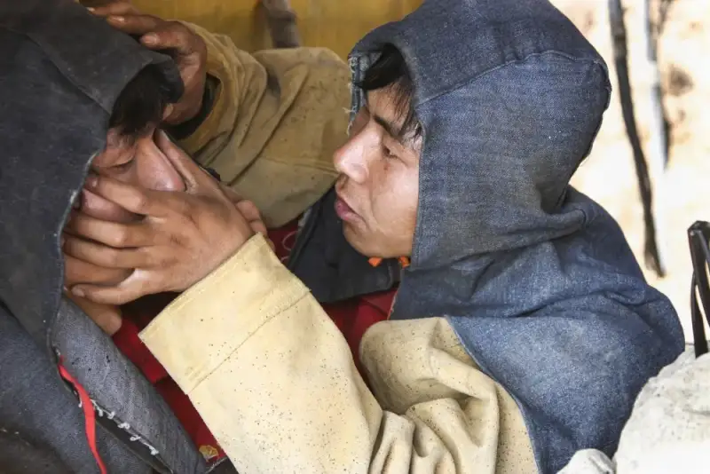
Building a Steel Pipe Network for the People: A Documentary of China's Long-Distance Oil and Gas Pipeline Construction. Part 9: Pipeline Welder. In July 2011, on the Jiangyou section of the Lanzhou-Chengdu-Guiyang pipeline in Sichuan, a welder burned his eyes on the arc of the welding torch. His crewmates rushed over to check on him. Welding volume is huge and quality standards are strict. Welding is a key post in pipeline building.
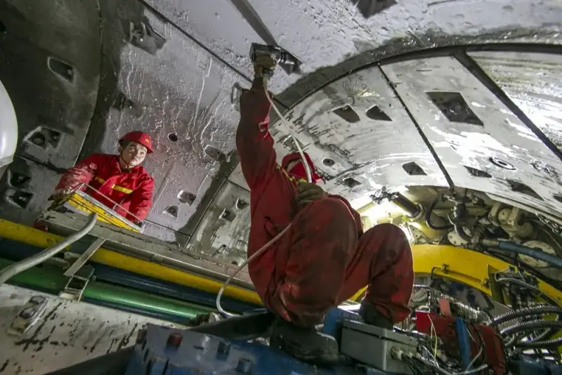
Building a Steel Pipe Network for the People: A Documentary of China's Long-Distance Oil and Gas Pipeline Construction. Part 10: River-Crossing Technology Leaps Forward. Over the last 20-plus years, China has built oil and gas pipelines on a huge scale. Many must cross large rivers and lakes. After years of study, builders developed a full set of river- and lake-crossing methods. They broke the foreign monopoly on this technology. This photo shows work under the Songhua River on the Chinese section of the China-Russia pipeline on October 8, 2016.
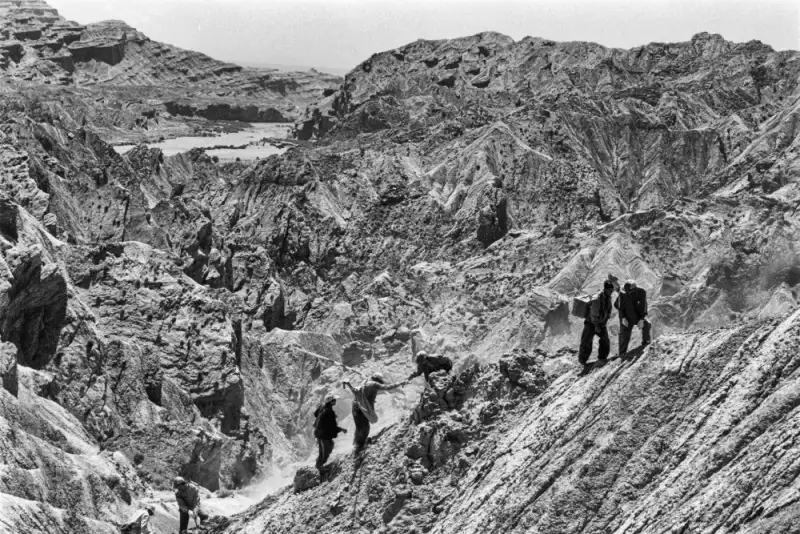
Oil Geological Survey Moves into the Mountains: A Documentary of Mountain Oil and Gas Exploration on the Southern Foot of the Tianshan, Xinjiang. Part 1: In the early 1990s, China Petroleum sounded the call to find oil and gas in the mountains. In July 1994, the Chuanqing Geophysical Exploration Mountain Company of the Sichuan Petroleum Exploration Bureau moved into the mountains of the Kuqa area in Xinjiang to explore for oil and gas.
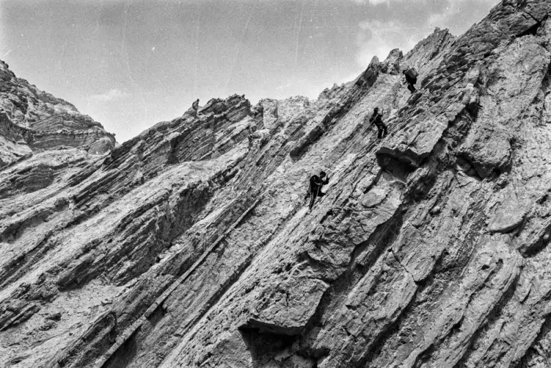
Oil Geological Survey Moves into the Mountains. Part 2: In July 1994, in the Dongqiulitak mountains of the Kuqa area in Xinjiang, oil exploration crews climbed high peaks and crossed steep ridges to find seismic survey points.
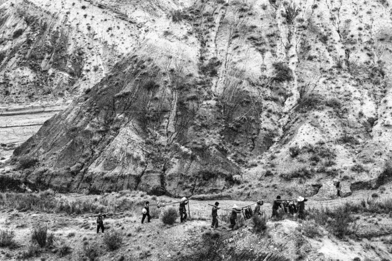
Oil Geological Survey Moves into the Mountains. Part 3: In August 1996, in the Xiqiulitak area on the southern foot of the Tianshan in Xinjiang, oil exploration equipment could only be carried into the mountains on men's shoulders.
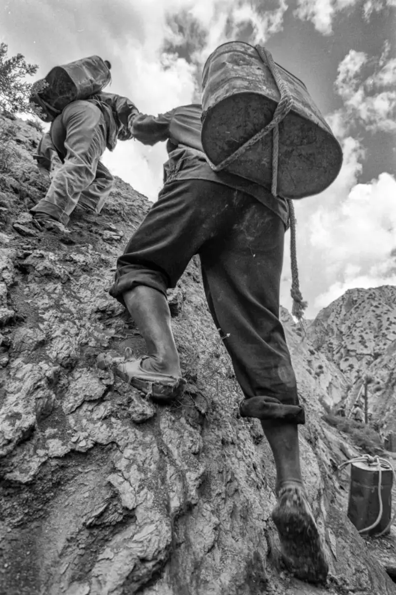
Oil Geological Survey Moves into the Mountains. Part 4: In August 1996, in the Xiqiulitak area on the southern foot of the Tianshan, exploration crews carried fuel up the mountain. Every step took hard effort. A pair of rubber boots wore out in ten days.
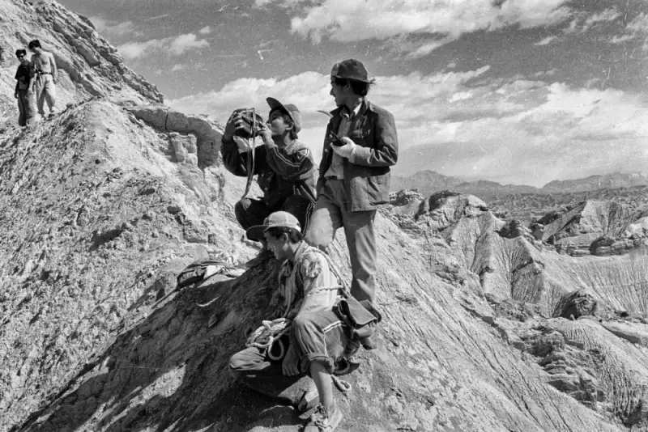
Oil Geological Survey Moves into the Mountains. Part 5: In the Kuqa area of Xinjiang, all mountain oil exploration work sites sit above 2,400 meters. The rough mountain roads and thin air at altitude constantly test the will of every exploration worker.
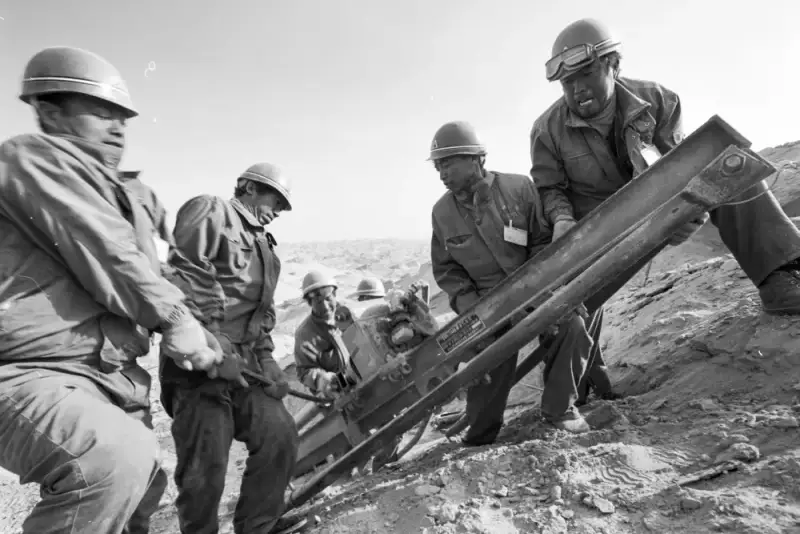
Oil Geological Survey Moves into the Mountains. Part 6: In August 2003, during mountain exploration in Kuqa, Xinjiang, mountain crews of the BGP Geophysical Exploration Company of China Petroleum strain to carry equipment to the top of a peak.
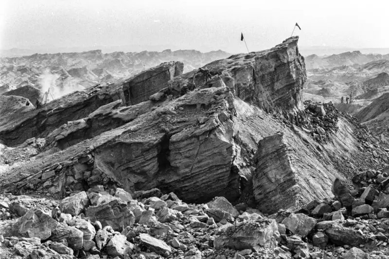
Oil Geological Survey Moves into the Mountains. Part 7: In October 2004, large-scale two-dimensional and three-dimensional seismic surveys began in the mountains on the southern foot of the Tianshan at Kuqa, Xinjiang. They led to many major oil and gas finds.
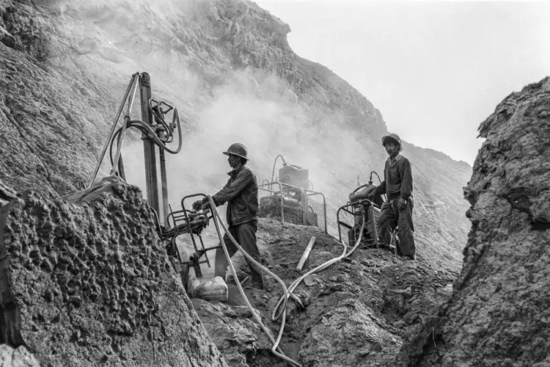
Oil Geological Survey Moves into the Mountains. Part 8: In July 2006, Sichuan mountain exploration crews drill shot holes in the mountain to gather more precise survey data.
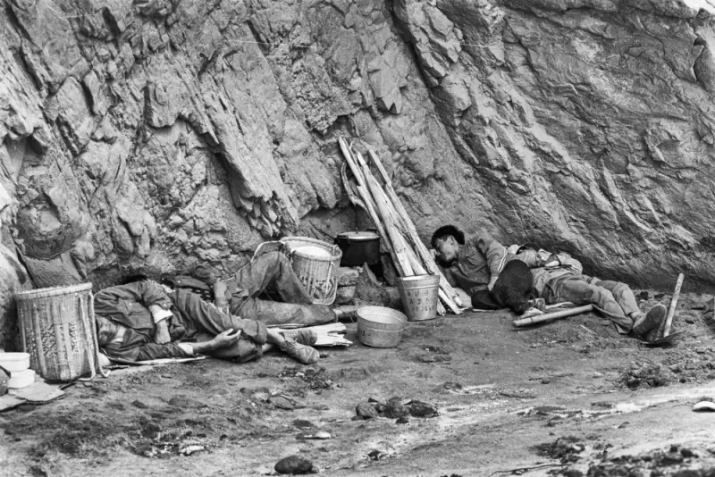
Oil Geological Survey Moves into the Mountains. Part 9: Since 1994, China Petroleum mountain crews have lived for years in the open mountains to find more oil and gas for the nation. They show again the spirit of offering oil to the motherland.
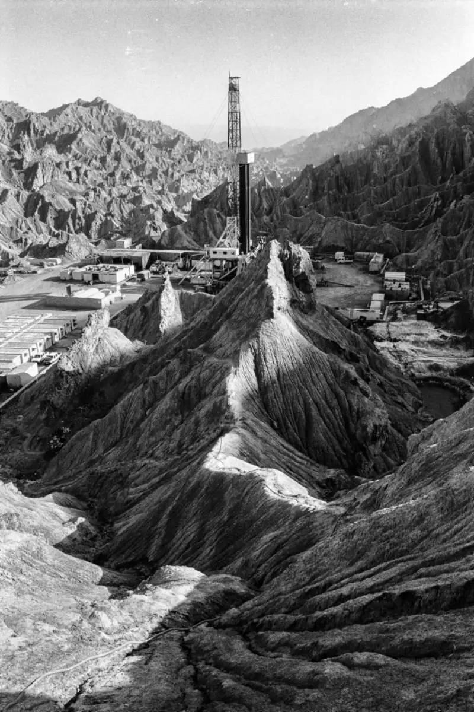
Oil Geological Survey Moves into the Mountains. Part 10: Through the steady work of the mountain crews, known as the oil scouts, rich natural gas was finally found in the Dongqiulitak and Xiqiulitak areas of Kuqa, Xinjiang. This photo shows a production well, drilled in the area in 2009, at work.
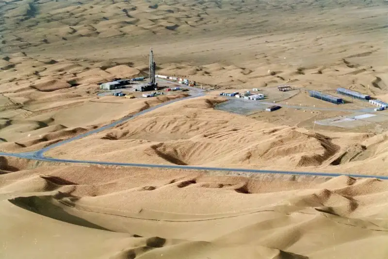
Sowing Green Hope in the Sea of Death: A Documentary of the 22-Year Greening of the Taklamakan Desert Highway in Xinjiang. Part 1: In 1992, China Petroleum drills a well in the heart of the Taklamakan Desert.
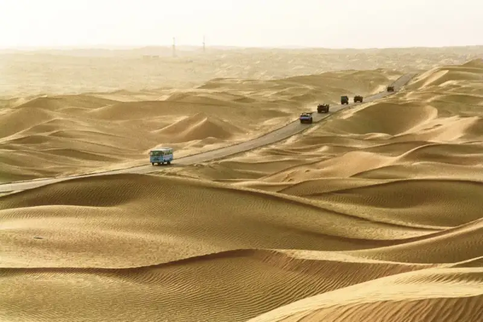
Sowing Green Hope in the Sea of Death. Part 2: In 1994, the Tarim Petroleum Exploration Command completed a 565-kilometer dedicated road across the Taklamakan. It was China's first graded highway built in a shifting desert.
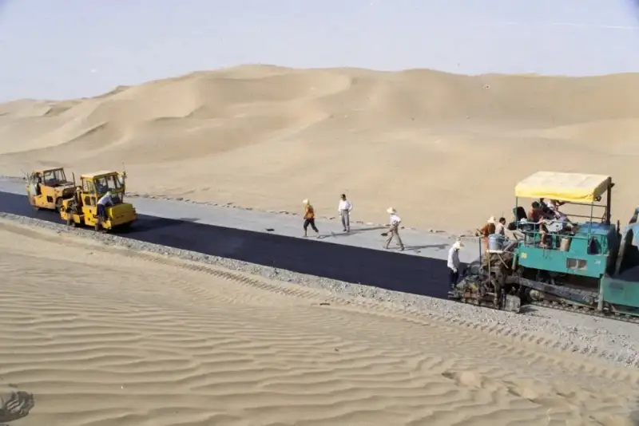
Sowing Green Hope in the Sea of Death. Part 3: The natural environment in the desert heart is harsh, and moving large equipment is hard. To keep oil exploration and development on track, work on the desert road began in 1992.
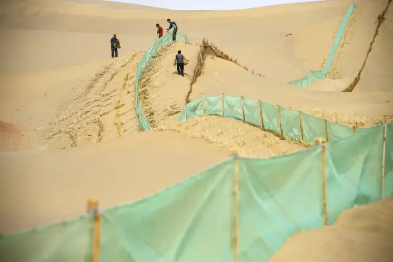
Sowing Green Hope in the Sea of Death. Part 4: To green the Taklamakan highway, workers built barriers from reeds. They then laid high-strength geotextile fabric on the windward side of the road. This blocked drifting sand from eroding the road. The method stayed in use until 2015.
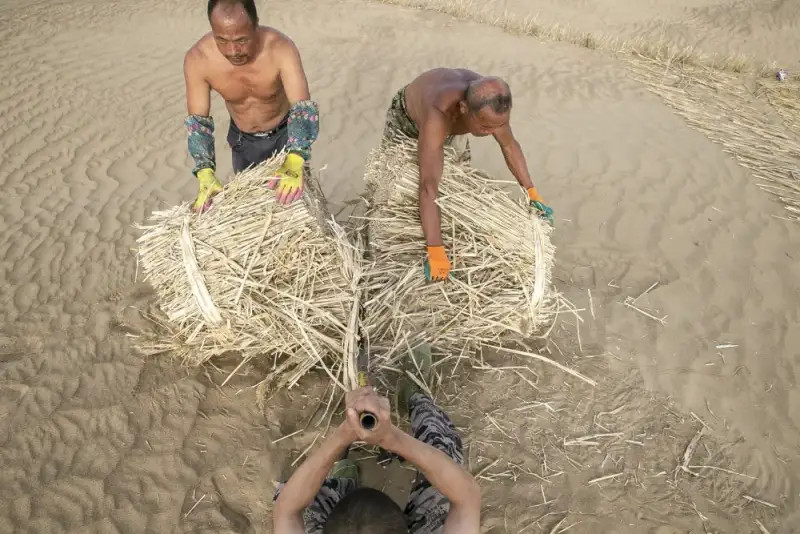
Sowing Green Hope in the Sea of Death. Part 5: Reeds from Bosten Lake in Xinjiang and wheat straw from farmland are the main materials for the plant-based sand control. In June 2015, workers cut wheat straw in two and bury it in the sand.
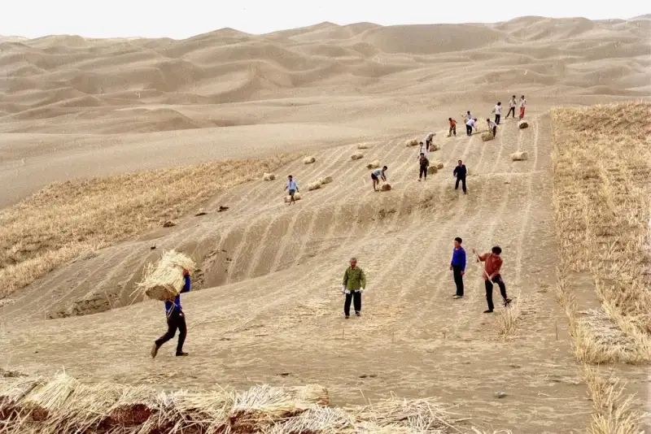
Sowing Green Hope in the Sea of Death. Part 6: The sand slopes beside the road collect drifting sand. Workers build one-meter square straw grids, like putting a coat on a dune. They stop drifting sand from spreading onto the road. This photo shows road-maintenance workers burying reeds in the sand in June 2016.
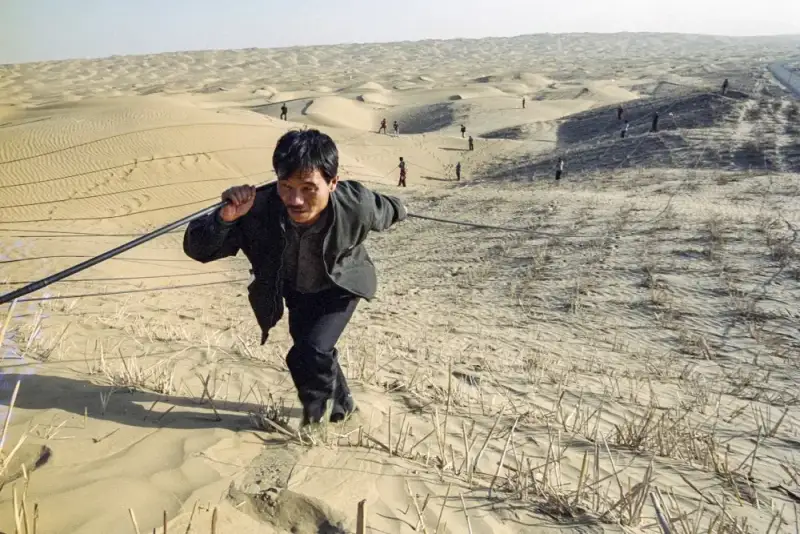
Sowing Green Hope in the Sea of Death. Part 7: In October 2003, to make sure the saplings along the desert road had enough water, workers laid 959.2 kilometers of supply pipe, 1,018 kilometers of branch pipe, and 19,184 kilometers of drip tubing along both sides. This photo shows workers laying water pipes.
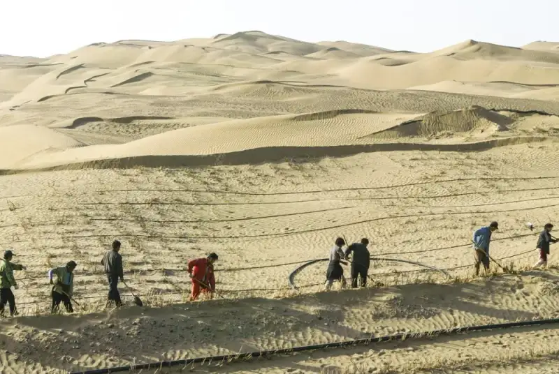
Sowing Green Hope in the Sea of Death. Part 8: The desert irrigation system is key to keeping the green saplings alive along the road. In October 2003, a greening crew lays out drip irrigation.
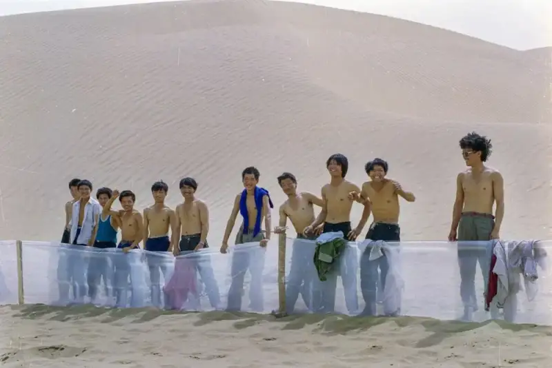
Sowing Green Hope in the Sea of Death. Part 9: Summer in the Taklamakan reaches 40 to 70 degrees Celsius. Migrant workers from Zigong in Sichuan, Nanyang in Henan, and Wuwei in Shaanxi gave their hard labor and sweat to green the road. This photo was taken in the summer of 1995.
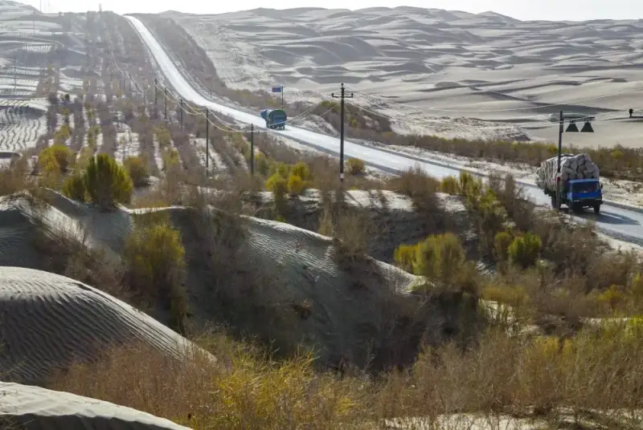
Sowing Green Hope in the Sea of Death. Part 10: On June 17, 2003, the Tarim Desert Highway Shelterbelt Ecological Project won national approval. Its total investment was 218 million yuan. At that point, China began a large-scale project to protect the desert road and improve the desert ecosystem.
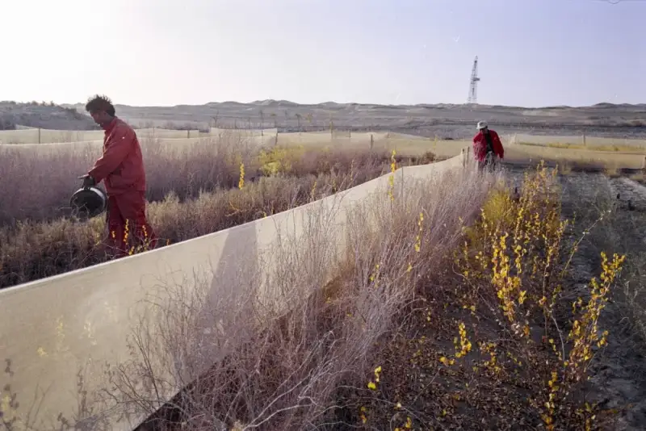
Sowing Green Hope in the Sea of Death. Part 11: Greening the desert road needed a huge volume of saplings. In 2003, several seedling nurseries were built in the heart of the Taklamakan for this purpose.
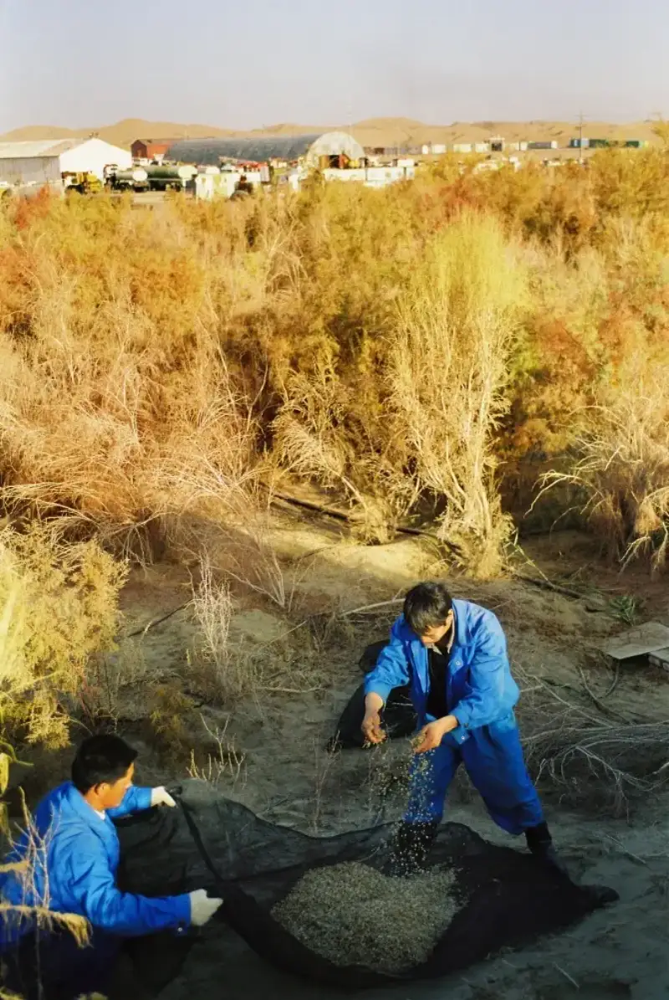
Sowing Green Hope in the Sea of Death. Part 12: After more than ten years of domestication and selection, researchers found several trees that suit the harsh desert. They include tamarisk, saxaul, and calligonum. All have a strong will to live in the desert. This photo shows workers breeding saplings on a large scale in 2003.
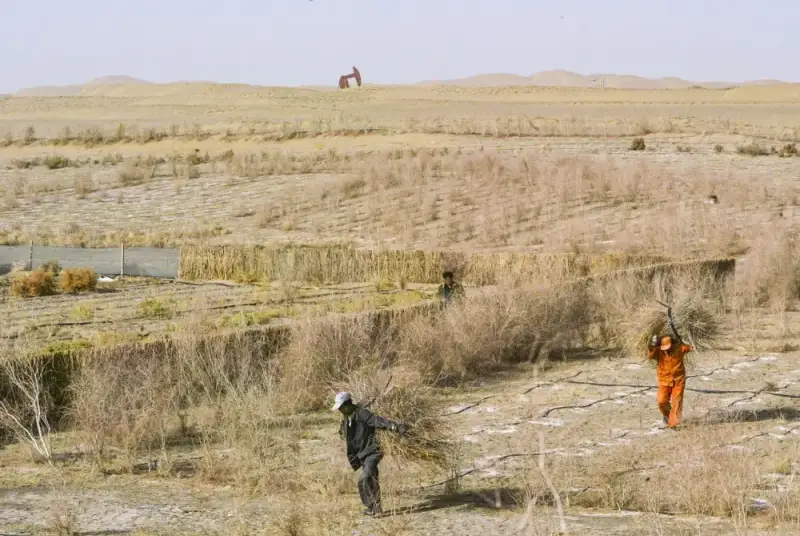
Sowing Green Hope in the Sea of Death. Part 13: In 2004, saplings that passed selection and domestication at the desert nurseries were planted, nonstop, into the greening areas.
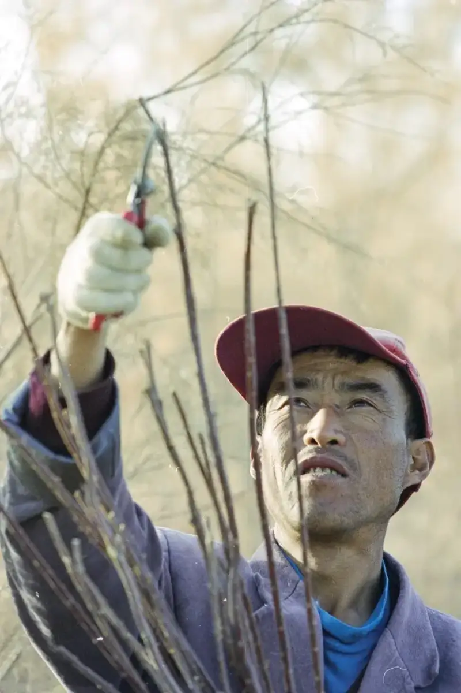
Sowing Green Hope in the Sea of Death. Part 14: In October 2005, workers tend the trees through wind and sand. In the desert heart, there are up to 270 days of wind and sand a year. Annual rainfall is under 90 millimeters, while evaporation exceeds 2,000 millimeters. Summer daytime temperatures usually top 40 degrees Celsius, and day-night temperature swings are large. These make caring for plants a huge challenge.
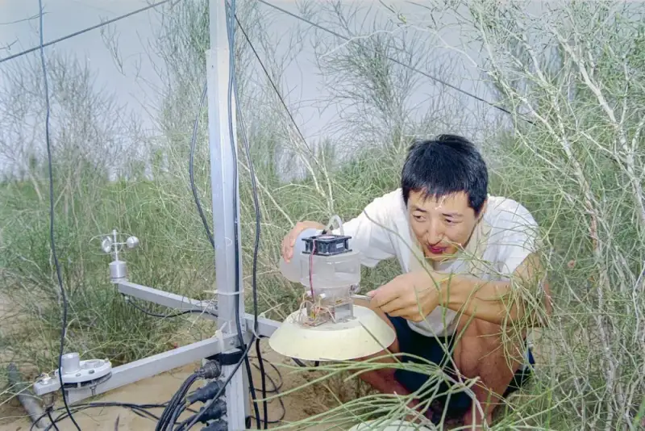
Sowing Green Hope in the Sea of Death. Part 15: In 2006, nearly a hundred researchers from more than ten institutes and construction teams, including the Xinjiang Institute of Ecology and Geography of the Chinese Academy of Sciences, had worked for 16 years. They gathered a large body of data and gained valuable experience in desert ecology. This photo shows researchers at a sampling point they set up in the desert.
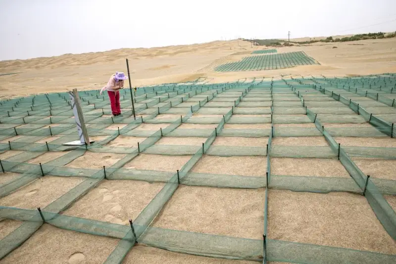
Sowing Green Hope in the Sea of Death. Part 16: In June 2015, researchers tested a new mechanical sand-control system in the desert. This photo shows Xinjiang desert researchers at a test site in the Taklamakan.
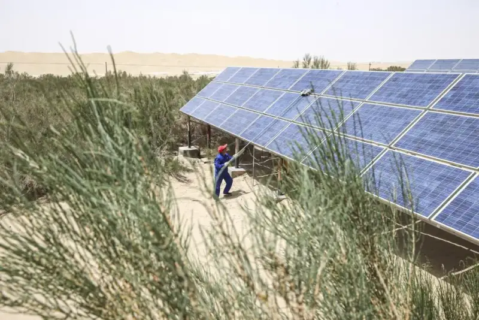
Sowing Green Hope in the Sea of Death. Part 17: By 2015, the Taklamakan desert road had a water-collection station every 10 kilometers. Each station draws groundwater to water the trees. The diesel generators used in the early days have now been replaced by solar power. This saves a large amount of energy.
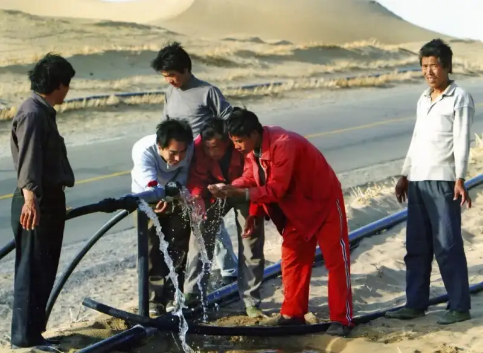
Sowing Green Hope in the Sea of Death. Part 18: Research shows that the Tarim Basin holds an underground water basin. The water is high in minerals, so people cannot drink it. But it is good for watering the green belts beside the desert road, and it gives desert plants a source of water. In October 2003, builders gladly wash their faces in the groundwater.
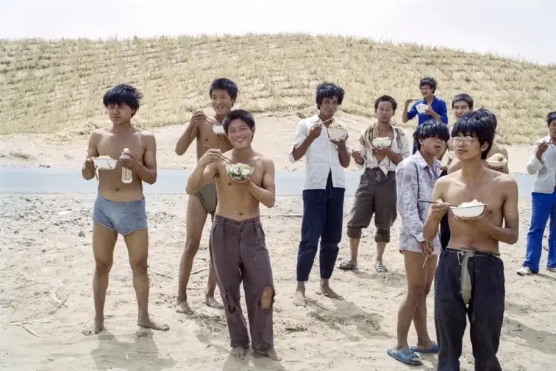
Sowing Green Hope in the Sea of Death. Part 19: These ordinary migrant workers from all over the country used their hard hands to sow seeds of hope in the Sea of Death. They built a green corridor. This photo was taken in the heart of the Taklamakan in August 1995.
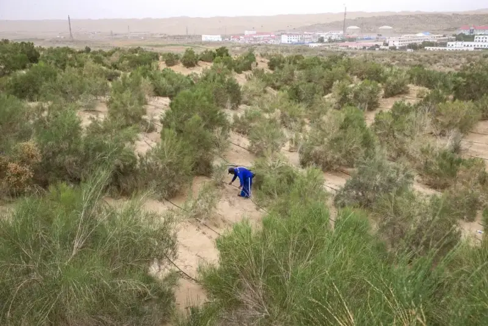
Sowing Green Hope in the Sea of Death. Part 20: In 2015, the area around the Tazhong-4 oil field in the heart of the Taklamakan was already covered by green plants. People hope that one day the vast desert will be green everywhere.
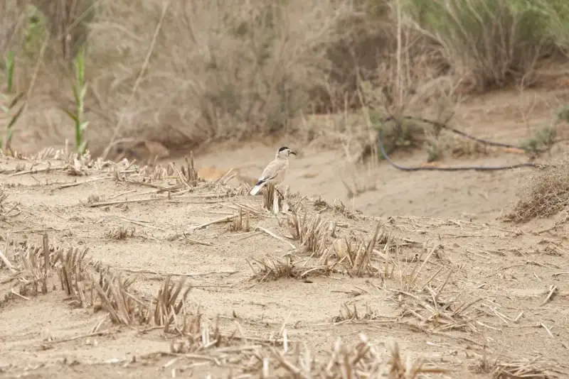
Sowing Green Hope in the Sea of Death. Part 21: By 2015, as the desert environment improved, people had found more than ten kinds of animals deep in the desert. This small bird had already made its home in the desert heart.
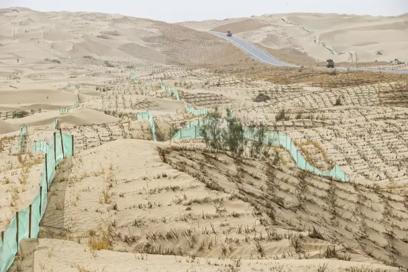
Sowing Green Hope in the Sea of Death. Part 22: In 2015, the Taklamakan desert highway kept extending, and the methods for controlling sand grew more mature over time.
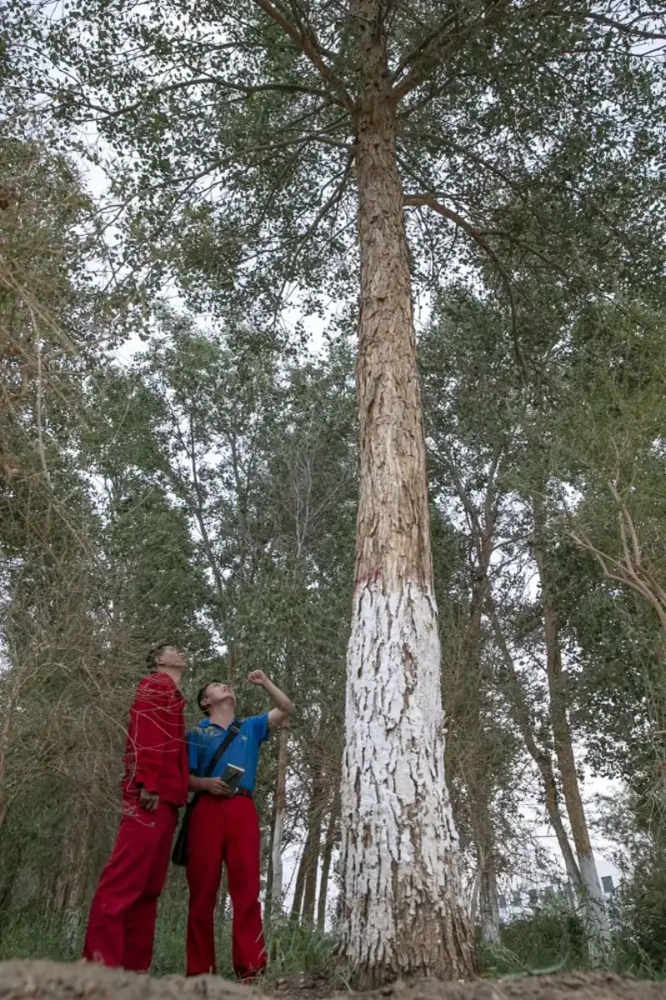
Sowing Green Hope in the Sea of Death. Part 23: Euphrates poplar trees planted by oil workers 20 years ago, when they built the Tazhong-4 field in the desert, have now grown into tall trees.
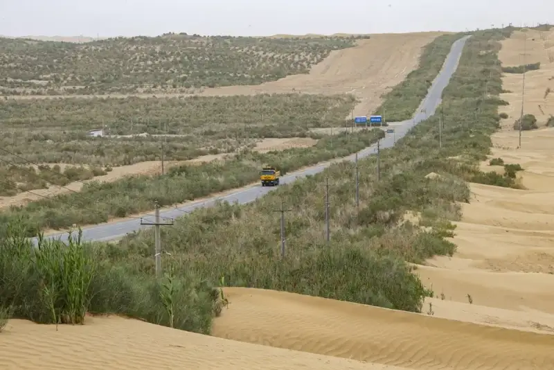
Sowing Green Hope in the Sea of Death. Part 24: In July 2015, the Taklamakan desert highway not only eased oil and gas exploration. It also became a road to a better life for local people.
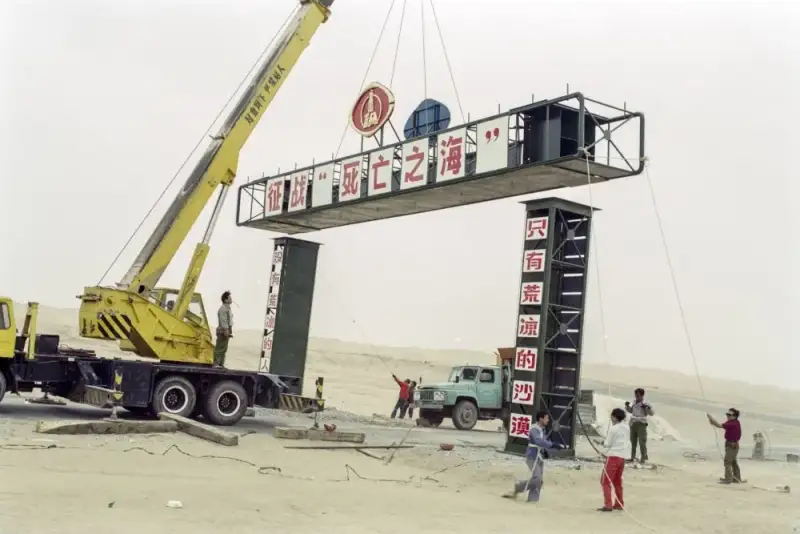
Sowing Green Hope in the Sea of Death. Part 25: In 2000, Tarim oil workers built a memorial gate at the start of the desert road. The upper couplet reads: There is only a barren desert. The lower couplet reads: There is no barren life. The horizontal banner reads: Conquer the Sea of Death!
View large image
Expand all
21/272
I Offer Oil to My Motherland
1. Yumen Oil Field. The Yumen Oil Field in Gansu Province lies in the heart of the Gobi, below the Qilian Mountains. It was the first oil field developed by New China. It is known as the cradle of China's oil industry. It sent more than a hundred thousand skilled workers to oil fields and refineries across the country. From 1949 to July 2022, it produced a total of 39.26 million tons of oil and gas.
I Offer Oil to My Motherland
2. The Oil Campaign. In 1983, the Liaohe Oil Field in the Panjin area of Liaoning Province launched a large oil campaign to raise crude output. The campaign drove crude production up, and the field soon ranked among China's major oil fields.
I Offer Oil to My Motherland
3. Carrying on the Iron Man Spirit. The Daqing Oil Field set a world record for production from a field of its kind. From 1976 it produced more than 50 million tons of crude a year, and it kept that high, stable output for 27 straight years. It then kept output above 40 million tons a year for another 12 years. This supplied energy for China's rapid economic growth during 40 years of reform and opening up. Today the Iron Man spirit, the Daqing spirit, and the spirit of offering oil to the motherland still live on among Daqing oil workers. This photo shows workers of the Daqing 1205 drilling crew working at the wellhead on August 26, 1997, amid flying mud.
I Offer Oil to My Motherland
4. Oil Worker in Wind and Snow. In February 2010, at the Hailar Oil Field in the Inner Mongolia Autonomous Region, oil workers patrol the wells across a vast snowfield at minus 38 degrees Celsius.
I Offer Oil to My Motherland
5. Oil-Field Workover Crew. Workover (maintenance on a producing well) is the dirtiest and hardest job in oil production. After a job, workers often leave covered in oil from head to foot. In February 2010, a young crew member in the Hailar area of the Daqing Oil Field faces his work with optimism.
Building a Steel Pipe Network for the People: A Documentary of China's Long-Distance Oil and Gas Pipeline Construction. Part 1: To Make Beijing's Sky Blue. The gas pipeline from Jingbian in Shaanxi to Beijing began in 1992. Its goal was to improve Beijing's air and give citizens clean, high-energy natural gas. This photo shows a 32-person pipe-carrying team from the Sichuan Petroleum Construction Company hauling a 1.8-ton pipe up a hill on the Loess Plateau in Fugu County, Shaanxi.
Building a Steel Pipe Network for the People: A Documentary of China's Long-Distance Oil and Gas Pipeline Construction. Part 2: Building the Pipeline with Precision. The Shaanxi-Beijing pipeline was China's first fully automated high-pressure gas pipeline. Its technical requirements were strict. Every weld was a key step in protecting quality. In 1997, a builder from the Sichuan Petroleum Construction Company grinds a weld to a fine finish.
Building a Steel Pipe Network for the People: A Documentary of China's Long-Distance Oil and Gas Pipeline Construction. Part 3: Building the West-East Gas Transmission Artery. In 2001, the West-East Gas Transmission project became a key project of China's tenth five-year plan. The pipe runs from Luntai County in the Xinjiang Uyghur Autonomous Region in the west to Baihe Town in Shanghai in the east. It is 4,200 kilometers long. Since it opened, it has carried more than 700 billion cubic meters of gas to the developed east. It benefits more than 400 cities and 500 million people along the route.
Building a Steel Pipe Network for the People: A Documentary of China's Long-Distance Oil and Gas Pipeline Construction. Part 4: The People Watch the West-East Gas Pipeline. On October 4, 2002, the key national project entered full construction. This gas artery, meant to improve China's energy mix, drew the attention of people along the route. When the pipe passed through Mengcheng County in Anhui Province, local residents came to the site to watch.
Building a Steel Pipe Network for the People: A Documentary of China's Long-Distance Oil and Gas Pipeline Construction. Part 5: Rushing the Lanzhou-Guiyang Pipeline. On July 17, 2011, the Lanzhou-to-Guiyang oil pipeline, built by the Third Company of the Petroleum Pipeline Bureau, crossed the Yanwangtai section in Kang County, Gansu Province. The slope reached 35 degrees.
Building a Steel Pipe Network for the People: A Documentary of China's Long-Distance Oil and Gas Pipeline Construction. Part 6: Building the China-Myanmar Oil and Gas Pipeline. On May 1, 2011, construction began on the oil and gas pipeline between China and Myanmar. This cross-border pipe is more than 2,400 kilometers long and is a key route for China's energy imports. The difficult, dangerous sections inside Myanmar were built by the Chinese side. This photo shows Chinese workers toiling in fierce heat over rough terrain, to finish the pipe on time.
Building a Steel Pipe Network for the People: A Documentary of China's Long-Distance Oil and Gas Pipeline Construction. Part 7: Building the China-Russia Pipeline in Severe Cold. The oil and gas pipeline between China and Russia received close attention from the leaders of both countries. Work began in stages from September 2010. This photo shows builders of China Petroleum working on December 7, 2016, at a site in the Greater Khingan range of Heilongjiang Province, in minus 38 degree cold.
Building a Steel Pipe Network for the People: A Documentary of China's Long-Distance Oil and Gas Pipeline Construction. Part 8: The Third Gas Pipeline to Beijing. After the first Shaanxi-Beijing gas pipeline opened in September 1997, Beijing's gas use grew every year. To meet the capital's need for clean energy and improve its air, China Petroleum built three more large-diameter high-pressure gas pipelines to supply Beijing. This photo shows builders working day and night on the third Shaanxi-Beijing line in January 2011.
Building a Steel Pipe Network for the People: A Documentary of China's Long-Distance Oil and Gas Pipeline Construction. Part 9: Pipeline Welder. In July 2011, on the Jiangyou section of the Lanzhou-Chengdu-Guiyang pipeline in Sichuan, a welder burned his eyes on the arc of the welding torch. His crewmates rushed over to check on him. Welding volume is huge and quality standards are strict. Welding is a key post in pipeline building.
Building a Steel Pipe Network for the People: A Documentary of China's Long-Distance Oil and Gas Pipeline Construction. Part 10: River-Crossing Technology Leaps Forward. Over the last 20-plus years, China has built oil and gas pipelines on a huge scale. Many must cross large rivers and lakes. After years of study, builders developed a full set of river- and lake-crossing methods. They broke the foreign monopoly on this technology. This photo shows work under the Songhua River on the Chinese section of the China-Russia pipeline on October 8, 2016.
Oil Geological Survey Moves into the Mountains: A Documentary of Mountain Oil and Gas Exploration on the Southern Foot of the Tianshan, Xinjiang. Part 1: In the early 1990s, China Petroleum sounded the call to find oil and gas in the mountains. In July 1994, the Chuanqing Geophysical Exploration Mountain Company of the Sichuan Petroleum Exploration Bureau moved into the mountains of the Kuqa area in Xinjiang to explore for oil and gas.
Oil Geological Survey Moves into the Mountains. Part 2: In July 1994, in the Dongqiulitak mountains of the Kuqa area in Xinjiang, oil exploration crews climbed high peaks and crossed steep ridges to find seismic survey points.
Oil Geological Survey Moves into the Mountains. Part 3: In August 1996, in the Xiqiulitak area on the southern foot of the Tianshan in Xinjiang, oil exploration equipment could only be carried into the mountains on men's shoulders.
Oil Geological Survey Moves into the Mountains. Part 4: In August 1996, in the Xiqiulitak area on the southern foot of the Tianshan, exploration crews carried fuel up the mountain. Every step took hard effort. A pair of rubber boots wore out in ten days.
Oil Geological Survey Moves into the Mountains. Part 5: In the Kuqa area of Xinjiang, all mountain oil exploration work sites sit above 2,400 meters. The rough mountain roads and thin air at altitude constantly test the will of every exploration worker.
Oil Geological Survey Moves into the Mountains. Part 6: In August 2003, during mountain exploration in Kuqa, Xinjiang, mountain crews of the BGP Geophysical Exploration Company of China Petroleum strain to carry equipment to the top of a peak.
Oil Geological Survey Moves into the Mountains. Part 7: In October 2004, large-scale two-dimensional and three-dimensional seismic surveys began in the mountains on the southern foot of the Tianshan at Kuqa, Xinjiang. They led to many major oil and gas finds.
Oil Geological Survey Moves into the Mountains. Part 8: In July 2006, Sichuan mountain exploration crews drill shot holes in the mountain to gather more precise survey data.
Oil Geological Survey Moves into the Mountains. Part 9: Since 1994, China Petroleum mountain crews have lived for years in the open mountains to find more oil and gas for the nation. They show again the spirit of offering oil to the motherland.
Oil Geological Survey Moves into the Mountains. Part 10: Through the steady work of the mountain crews, known as the oil scouts, rich natural gas was finally found in the Dongqiulitak and Xiqiulitak areas of Kuqa, Xinjiang. This photo shows a production well, drilled in the area in 2009, at work.
Sowing Green Hope in the Sea of Death: A Documentary of the 22-Year Greening of the Taklamakan Desert Highway in Xinjiang. Part 1: In 1992, China Petroleum drills a well in the heart of the Taklamakan Desert.
Sowing Green Hope in the Sea of Death. Part 2: In 1994, the Tarim Petroleum Exploration Command completed a 565-kilometer dedicated road across the Taklamakan. It was China's first graded highway built in a shifting desert.
Sowing Green Hope in the Sea of Death. Part 3: The natural environment in the desert heart is harsh, and moving large equipment is hard. To keep oil exploration and development on track, work on the desert road began in 1992.
Sowing Green Hope in the Sea of Death. Part 4: To green the Taklamakan highway, workers built barriers from reeds. They then laid high-strength geotextile fabric on the windward side of the road. This blocked drifting sand from eroding the road. The method stayed in use until 2015.
Sowing Green Hope in the Sea of Death. Part 5: Reeds from Bosten Lake in Xinjiang and wheat straw from farmland are the main materials for the plant-based sand control. In June 2015, workers cut wheat straw in two and bury it in the sand.
Sowing Green Hope in the Sea of Death. Part 6: The sand slopes beside the road collect drifting sand. Workers build one-meter square straw grids, like putting a coat on a dune. They stop drifting sand from spreading onto the road. This photo shows road-maintenance workers burying reeds in the sand in June 2016.
Sowing Green Hope in the Sea of Death. Part 7: In October 2003, to make sure the saplings along the desert road had enough water, workers laid 959.2 kilometers of supply pipe, 1,018 kilometers of branch pipe, and 19,184 kilometers of drip tubing along both sides. This photo shows workers laying water pipes.
Sowing Green Hope in the Sea of Death. Part 8: The desert irrigation system is key to keeping the green saplings alive along the road. In October 2003, a greening crew lays out drip irrigation.
Sowing Green Hope in the Sea of Death. Part 9: Summer in the Taklamakan reaches 40 to 70 degrees Celsius. Migrant workers from Zigong in Sichuan, Nanyang in Henan, and Wuwei in Shaanxi gave their hard labor and sweat to green the road. This photo was taken in the summer of 1995.
Sowing Green Hope in the Sea of Death. Part 10: On June 17, 2003, the Tarim Desert Highway Shelterbelt Ecological Project won national approval. Its total investment was 218 million yuan. At that point, China began a large-scale project to protect the desert road and improve the desert ecosystem.
Sowing Green Hope in the Sea of Death. Part 11: Greening the desert road needed a huge volume of saplings. In 2003, several seedling nurseries were built in the heart of the Taklamakan for this purpose.
Sowing Green Hope in the Sea of Death. Part 12: After more than ten years of domestication and selection, researchers found several trees that suit the harsh desert. They include tamarisk, saxaul, and calligonum. All have a strong will to live in the desert. This photo shows workers breeding saplings on a large scale in 2003.
Sowing Green Hope in the Sea of Death. Part 13: In 2004, saplings that passed selection and domestication at the desert nurseries were planted, nonstop, into the greening areas.
Sowing Green Hope in the Sea of Death. Part 14: In October 2005, workers tend the trees through wind and sand. In the desert heart, there are up to 270 days of wind and sand a year. Annual rainfall is under 90 millimeters, while evaporation exceeds 2,000 millimeters. Summer daytime temperatures usually top 40 degrees Celsius, and day-night temperature swings are large. These make caring for plants a huge challenge.
Sowing Green Hope in the Sea of Death. Part 15: In 2006, nearly a hundred researchers from more than ten institutes and construction teams, including the Xinjiang Institute of Ecology and Geography of the Chinese Academy of Sciences, had worked for 16 years. They gathered a large body of data and gained valuable experience in desert ecology. This photo shows researchers at a sampling point they set up in the desert.
Sowing Green Hope in the Sea of Death. Part 16: In June 2015, researchers tested a new mechanical sand-control system in the desert. This photo shows Xinjiang desert researchers at a test site in the Taklamakan.
Sowing Green Hope in the Sea of Death. Part 17: By 2015, the Taklamakan desert road had a water-collection station every 10 kilometers. Each station draws groundwater to water the trees. The diesel generators used in the early days have now been replaced by solar power. This saves a large amount of energy.
Sowing Green Hope in the Sea of Death. Part 18: Research shows that the Tarim Basin holds an underground water basin. The water is high in minerals, so people cannot drink it. But it is good for watering the green belts beside the desert road, and it gives desert plants a source of water. In October 2003, builders gladly wash their faces in the groundwater.
Sowing Green Hope in the Sea of Death. Part 19: These ordinary migrant workers from all over the country used their hard hands to sow seeds of hope in the Sea of Death. They built a green corridor. This photo was taken in the heart of the Taklamakan in August 1995.
Sowing Green Hope in the Sea of Death. Part 20: In 2015, the area around the Tazhong-4 oil field in the heart of the Taklamakan was already covered by green plants. People hope that one day the vast desert will be green everywhere.
Sowing Green Hope in the Sea of Death. Part 21: By 2015, as the desert environment improved, people had found more than ten kinds of animals deep in the desert. This small bird had already made its home in the desert heart.
Sowing Green Hope in the Sea of Death. Part 22: In 2015, the Taklamakan desert highway kept extending, and the methods for controlling sand grew more mature over time.
Sowing Green Hope in the Sea of Death. Part 23: Euphrates poplar trees planted by oil workers 20 years ago, when they built the Tazhong-4 field in the desert, have now grown into tall trees.
Sowing Green Hope in the Sea of Death. Part 24: In July 2015, the Taklamakan desert highway not only eased oil and gas exploration. It also became a road to a better life for local people.
Sowing Green Hope in the Sea of Death. Part 25: In 2000, Tarim oil workers built a memorial gate at the start of the desert road. The upper couplet reads: There is only a barren desert. The lower couplet reads: There is no barren life. The horizontal banner reads: Conquer the Sea of Death!
Name: Ding Wei
Gender: Male
Ethnicity: Han
Date of birth: 1958-05-02
Political status: Member of the Communist Party of China
Education: University
Employer: China Petroleum Daily
Position: News Director, China Petroleum Daily
Title: Associate Senior, Chief Reporter
Hometown: Nanguan District, Changchun, Jilin Province
Photography career:
Vice president and standing head of the 8th and 9th China Press Photography Society. He has served as head of the photography department and news director at the Liaohe Oil Field News and China Petroleum Daily. He has also chaired the Press Photography Committee of the China Petroleum Journalists Association.
Photographic works:
Series of 5 photos: I Offer Oil to My Motherland
China's oil industry grew up with the republic. In 1949 the country produced only 120,000 tons of crude a year and was seen as poor in oil. It later became the world's eighth largest oil producer. Generations of oil workers worked under open skies on wasteland, in the Gobi, the desert, the mountains, and by the sea to find oil and gas. They sent industrial blood to China's economy in hard times. They secured energy for the takeoff of reform and opening up. Over the last 30-plus years, the country has pushed natural gas hard. It built more long-distance oil and gas pipelines. The result is a network that runs east to west, north to south, and links to overseas sources. This balances resources at home and abroad. Clean natural gas use in large and medium Chinese cities grows each year. It cuts air pollution and supports the building of a beautiful China. The Daqing spirit and the Iron Man spirit are a treasure of the Chinese nation. General Secretary Xi Jinping has called for carrying forward the oil spirit. It has become a strong, lasting source of power that pushes generation after generation of oil workers to offer oil to the motherland.
Series of 10 photos:Building a Steel Pipe Network for the People: A Documentary of China's Long-Distance Oil and Gas Pipeline Construction
From the 1990s, China's oil and gas pipeline building entered a fast lane. In 1992, the gas pipeline from Jingbian in Shaanxi to Beijing began. Its goal was to improve Beijing's air. It opened the era of piping gas into China's big cities. As the national one-network buildout sped up, four import routes took shape: Central Asia, China-Russia, China-Myanmar, and sea transport. The Shaanxi-Beijing system (lines 1, 2, 3, and 4) supplies Beijing. The West-East Gas Transmission system supplies the developed east. Together with the Sichuan-to-East gas line, they form a three-vertical, three-horizontal network. By 2021, the national backbone network was basically in place. Trunk lines were linked, isolated gas sources were mostly gone, and peak-shaving storage grew. Winter heating seasons saw steady gas supply. After 27 years of effort, the country's gas pipelines reached more than 110,000 kilometers. During the 13th five-year plan, China's gas use grew by 134.8 billion cubic meters, a rise of 70%. The population with gas access grew by 160 million, to 490 million. Compared with coal of equal energy, the added gas use cut 570 million tons of carbon dioxide and 6.3 million tons of sulfur dioxide. This greatly improved the air, and cities saw clearly more blue-sky days.
Series of 10 photos:Oil Geological Survey Moves into the Mountains: A Documentary of Mountain Oil and Gas Exploration on the Southern Foot of the Tianshan, Xinjiang
Mountains cover about 33% of China's land, and they hold rich minerals. Geologists predict good oil and gas geology under the main western ranges. To map the geology of the Dongqiulitak and Xiqiulitak areas on the southern foot of the Tianshan in Xinjiang, and to wake the gas dragon that had slept for millions of years, China Petroleum formed a mountain-only exploration team in 1994. It carried out large-scale two- and three-dimensional seismic surveys in the high mountains where oil and gas could form. This opened the move of onshore oil and gas exploration from plains and hills into the mountains. It is fair to say that in the history of China Petroleum, mountain exploration is the hardest, most dangerous, and most challenging work. Crews face gullies, cliffs, strange peaks, and near-vertical rock walls almost no one visits. To move equipment to a summit, every kilometer of mountain road brings unthinkable hardship. Each crew member needs professional skill plus the tough will of a climber and the skills to climb ropes and scale cliffs. Mountain exploration has now run a hard 28 years. Over those years, the author followed the crews for many years. He used his camera to record moving moments of these brave workers as they sought oil and gas in the mountains. His images show oil workers carving the spirit of fearing neither hardship nor death into the rock. Some gave their lives to the mountains, and some were badly hurt. China Petroleum sums up their spirit as the mountain oil spirit. At the end of 2002, seismic data from the crews led to a large gas field. After ultra-deep drilling, China Petroleum found a giant gas field of hundreds of millions of cubic meters on the southern Tianshan in the Tarim. Today, gas from here flows through the West-East and Shaanxi-Beijing pipelines to Beijing and to the developed southeast coast. It plays a growing role in improving China's energy mix.
Feature of 25 photos: Sowing Green Hope in the Sea of Death: A Documentary of the 22-Year Greening of the Taklamakan Desert Highway in Xinjiang
The Taklamakan Desert in Xinjiang covers 330,000 square kilometers. It is the second largest shifting desert in the world. It is called the Sea of Death and the forbidden zone of life. For many years, only fear and drought went with it. Then, in the early 1990s, large-scale oil and gas exploration woke this mysterious desert. The Taklamakan holds rich oil and gas deep inside. But how could large exploration equipment reach its heart? And how could the oil and gas reach the market outside? Building a road across the desert became a must. After more than three years of work, oil road builders completed a 565-kilometer graded highway through the desert in 1994. To stop the shifting sand from eroding the road, the Xinjiang Institute of Ecology and Geography of the Chinese Academy of Sciences and other research units worked together from 1994. They found an effective way to hold sand with plants. First, they wove grids of reeds and straw and planted them in the desert, extending more than a hundred meters on each side of the road. Then they strung geotextile fabric beside the grids to form barriers. Last, they planted trees on the grids. To raise the survival rate of the trees, researchers at the Xinjiang Desert Institute spent years studying and testing. They selected more than 70 plants that resist heat and sand. After domestication, four of them fully survive in the harsh desert. Once large plantings took hold, they slowed the shifting sand beside the road and stopped it from repeatedly attacking the highway. In June 2003, the Taklamakan Desert Highway Shelterbelt Ecological Project won national approval. Its investment was 218 million yuan. The Tarim Petroleum Exploration Command ran the project. As planned, they planted green belts 72 to 78 meters wide on both sides of the main desert road. The total area reached 3,516 hectares. They planted 20.8 million hardy shrubs such as tamarisk, calligonum, and saxaul to hold the sand. They also dug a well every 10 kilometers in the belt for drip irrigation. By 2015, 22 years later, the Taklamakan had a new look. A black ribbon, held by green belts, stretched across the golden sea of sand. Unbroken convoys gave the desert life and energy. Today, the oil and gas fields deep in the Taklamakan are a key national energy base. The growth of road transport has boosted Xinjiang's economy and society and made life easier for its people. The human dream of reshaping the great desert is slowly coming true.